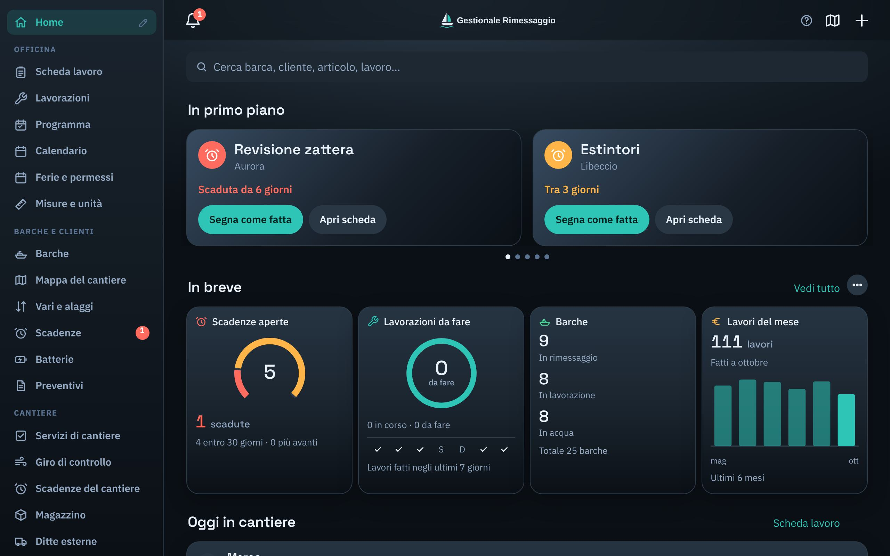
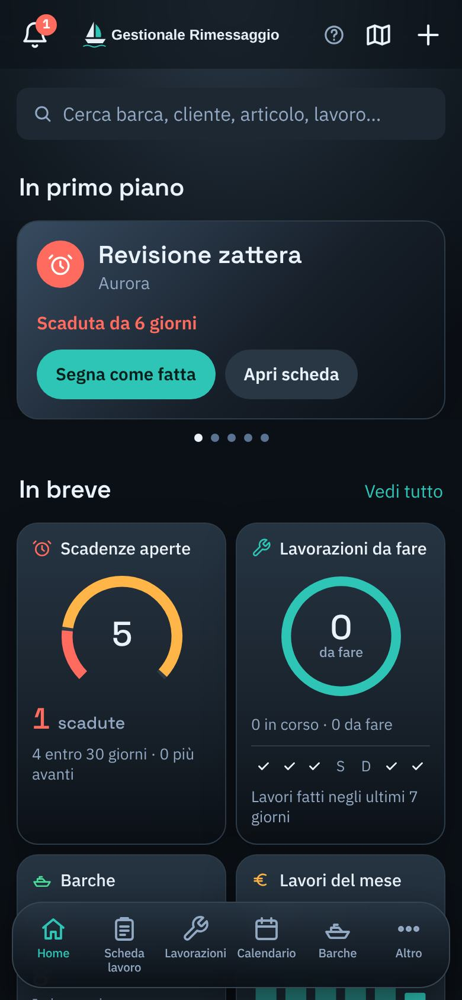
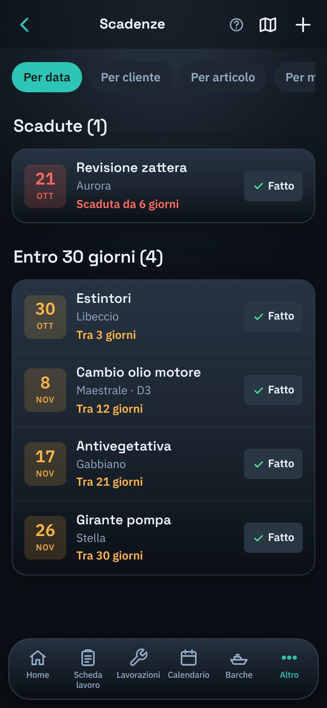
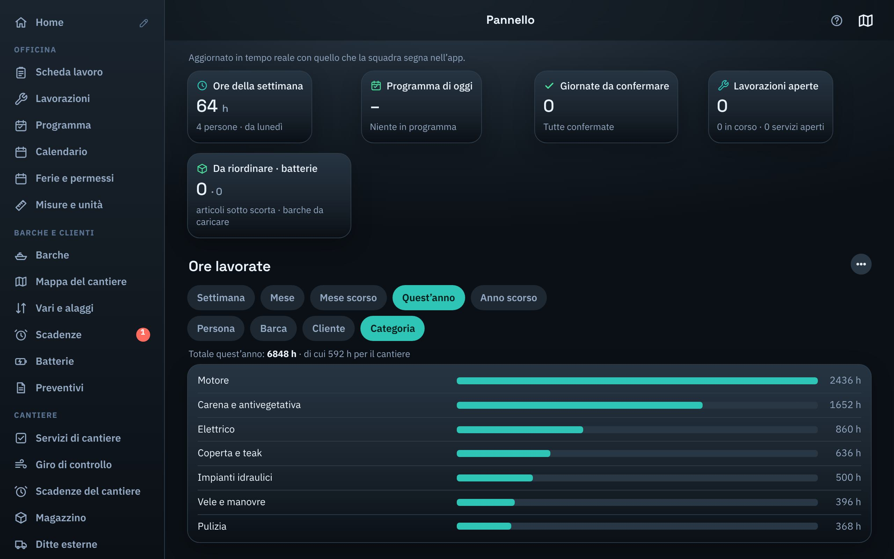

Barche, lavori, scadenze, magazzino, mappa del cantiere e porto in un’unica app. Si usa dal telefono in banchina e dal computer in ufficio, senza installare niente.


Ogni sezione si accende o si spegne: tieni solo quello che serve alla tua azienda.
Scheda di ogni barca con modello, misure, posto, proprietario e la storia di tutti i lavori fatti.
Ognuno segna le sue ore e le mansioni del giorno; l’amministratore conferma le giornate.
Cosa c’è da fare, chi lo fa e quando, con calendario e mezzi già impegnati.
Zattere, estintori, tagliandi: avviso sul telefono prima che scadano, con l’elenco dei clienti da chiamare.
Carico e scarico anche col codice a barre, kit di ricambi, inventario e lista della spesa.
Carica la pianta del piazzale e trascina le barche al loro posto; vari e alaggi in calendario.
Le schede lavoro da stampare e la griglia delle ore per il commercialista, pronte da scaricare.
Il cliente entra con il codice dell’azienda e vede la sua barca e i lavori fatti.
Registro dei rifiuti, ferie e permessi, controllo dei mezzi prima dell’uso.
Ogni mattina feriale l’app manda l’avviso di cosa scade. Le vedi per data, per cliente, per articolo o per modello.


Il Pannello dell’amministratore mostra le ore per persona, barca, cliente o tipo di lavoro: della settimana, del mese o dell’anno intero.
Ogni azienda vede solo i suoi dati.
Scegli «Registro la mia azienda» e scrivi nome dell’azienda, telefono e i tuoi dati.
Il gestore del servizio controlla la richiesta e la approva: entri come amministratore.
Manda il codice dell’azienda a colleghi e clienti: si registrano con quello e li approvi tu.
Registra la tua azienda: la richiesta arriva al gestore del servizio, che ti attiva e ti ricontatta al numero che lasci.
Registra la tua azienda